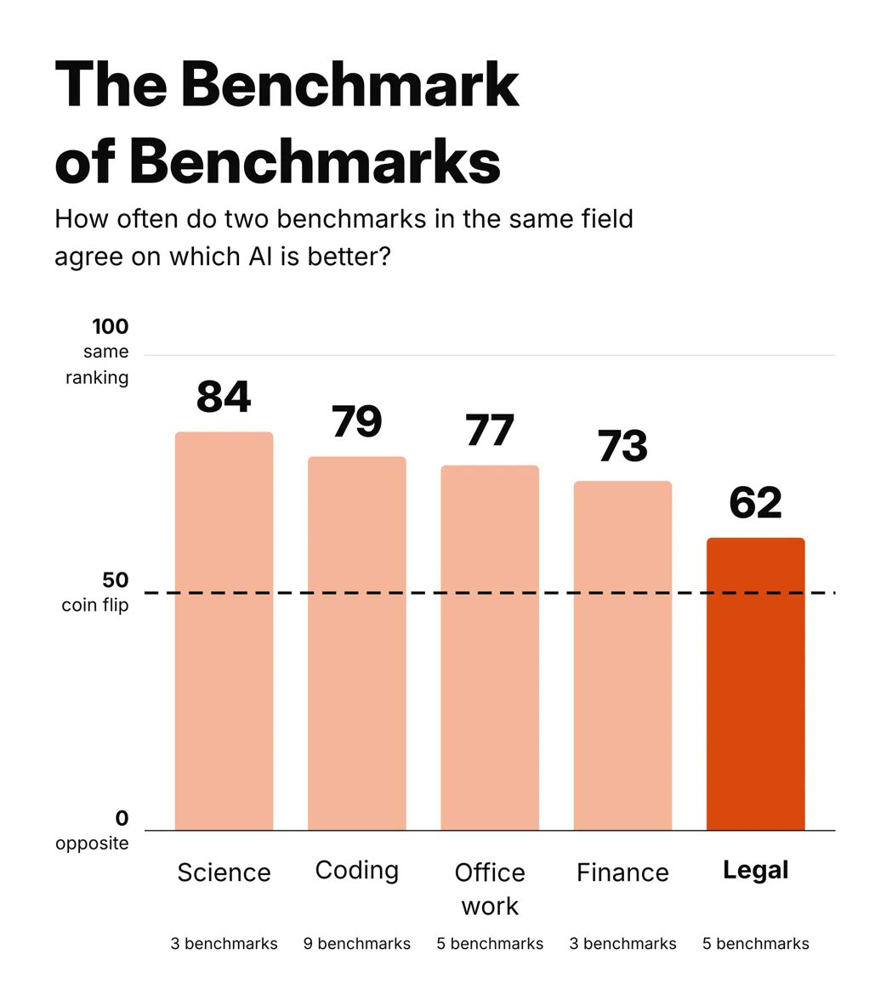
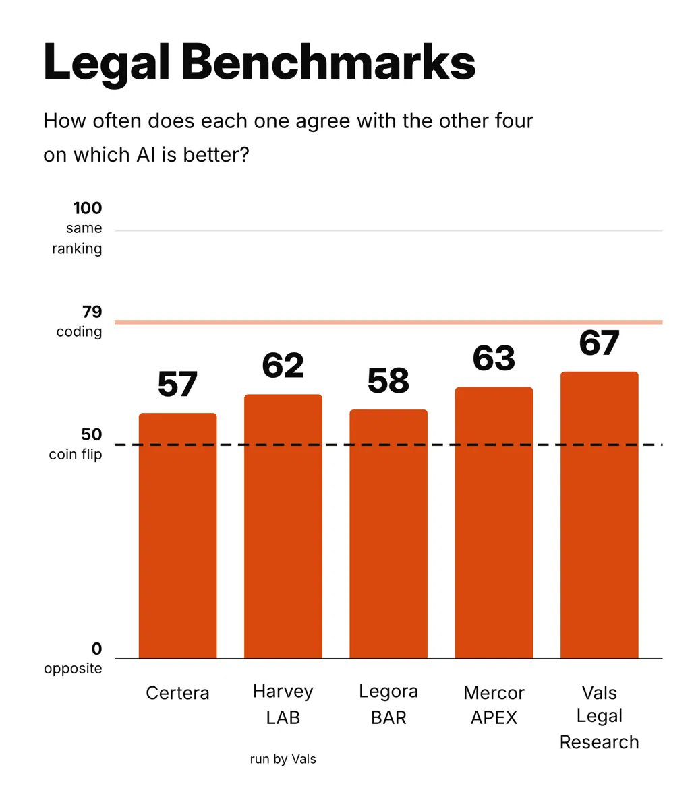

the benchmark of benchmarks
if you ask which AI model is better, different coding benchmarks agree 79% of the time vs 62% for legal a coin flip is 50% each benchmark has its own standard for good answers but those vary more in law than other fields

how much should you trust a legal benchmark? way less than a coding one. a few points up/down is largely arbitrary if many benchmarks agree, the model is probably just stronger overall (not necessarily better at law)

this is largely because answer keys make legal judgments in grading, which gives them more room to disagree (and way more ways to get the grading wrong).
legal work has many good answers, which a panel of experts won’t settle either (it outvotes a lawyer’s view even where good lawyers differ).
some benchmarks already account for that (grading against many lawyers’ rubrics, explaining every point, taking points off for over-editing) but more should follow.